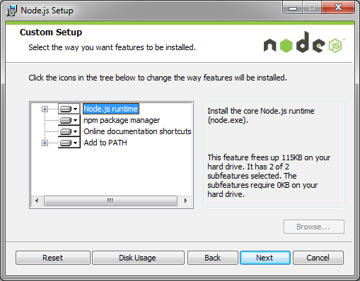

This section provides step-by-step instructions for installing Node.js and the JSDoc 3 toolkit on a Windows PC. First, execute the installer that you downloaded from the Node.js website. Accept the agreement and make sure all of the features are set to be installed.

After the installation is complete, open up the Command Prompt with the Run as administrator option and go to the directory where you installed Node.js. On a Windows system, this is usually C:\Program Files\nodejs, or C:\Program Files (x86)\nodejs if you installed the 32-bit version. Next, type the following command at the command prompt to install the JSDoc 3 toolkit.
npm install jsdoc
If you get a response like the following, the installation was successful.
jsdoc@3.3.0 node_modules\jsdoc ├── escape-string-regexp@1.0.3 ├── strip-json-comments@1.0.2 ├── taffydb@2.6.2 ├── underscore@1.7.0 ├── async@0.9.0 ├── js2xmlparser@0.1.9 ├── wrench@1.5.8 ├── marked@0.3.3 ├── requizzle@0.2.1 (underscore@1.6.0) ├── esprima@1.1.0-dev-harmony └── catharsis@0.8.6 (underscore-contrib@0.3.0)
Now you need to add the JSDoc 3 directory to the PATH environment variable so you can run the tool from any directory. To set the path, type the following command. If you installed Node.js in a different directory, be sure to update the directory accordingly.
set PATH=%PATH%;C:\Program Files\nodejs\node_modules\.bin
You will now be able to run the jsdoc command from any directory by typing jsdoc <directory or filename> at the command prompt. You can type a period (.) to represent the current directory.